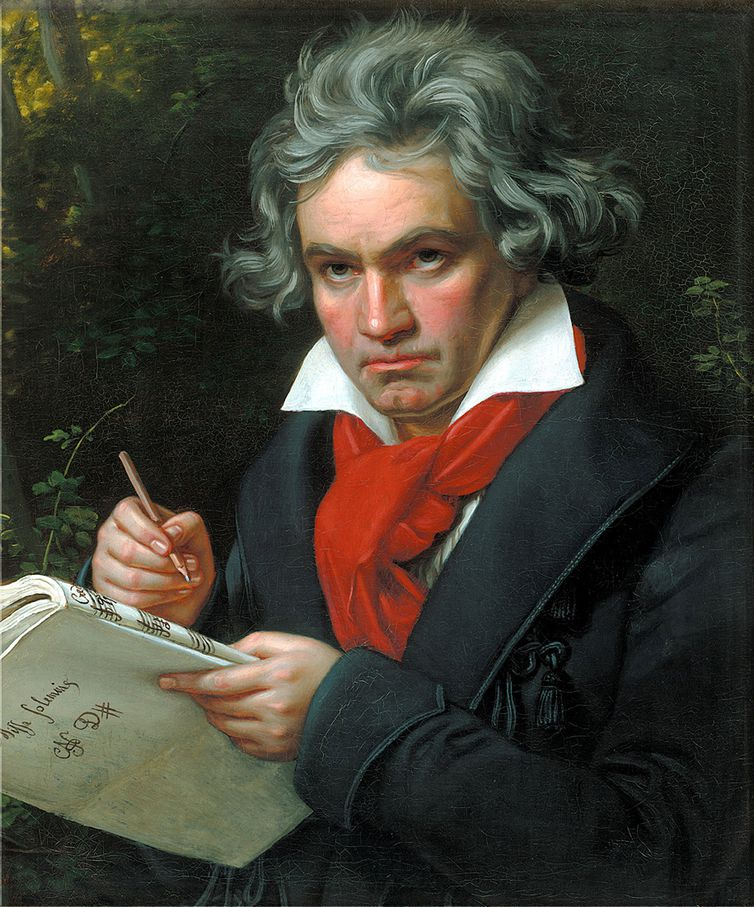

Ludwig van Beethoven
Compositor

Biografia de Ludwig van Beethoven
Ludwig van Beethoven (1770-1827) foi um compositor, regente e pianista alemão. A Nona Sinfonia, conhecida também como Sinfonia Coral, por incluir coro em seu quarto movimento, foi a obra que o consagrou em todo o mundo. Quando estava com 27 anos, Beethoven começou a desenvolver os primeiros sintomas de surdez e aos 48 já estava inteiramente surdo.Linha do tempo
1770 Ludwig van Beethoven nasceu em Bonn, Alemanha, no dia 17 de dezembro de 1770.
1781Nessa época começou a aprender piano, instrumento no qual se destacaria mais tarde.
1784 Ele escreveu “Três Sonatinas para Piano”.
1787 Ele foi encaminhado para Viena para estudar com Mozart levando uma carta de apresentação do Príncipe.
1788 Conheceu o conde Ferdinand Ernest von Waldstein, que logo o tomou sob sua proteção.
1795 Beethoven pode fazer sua primeira apresentação pública. Na ocasião, executou um concerto para piano, quando foi delirantemente aplaudido.
Logo em seguida, uma renomada editora publicou ao “Três Trios para Piano”, Violino e violoncelo, Opus 1, dedicados ao príncipe Lichnowsky.
1798 Quando tinha 27 anos, Beethoven começou a desenvolver os primeiros sintomas de surdez,
porém ele escondeu o problema de praticamente todos.
1808 A primeira vez que a Quinta Sinfonia foi tocada foi no dia 22 de dezembro de 1808,
no Theater an der Wien, em Viena, tendo sido regida pelo próprio Beethoven,
que também executou a Sexta Sinfonia entre outras peças suas.
1827Ludwig van Beethoven morreu em Viena, Áustria,
aos cinquenta e seis anos, no dia 26 de março de 1827.
Se quiser saber mais sobre Ludwig van Beethoven, Clique Aqui
Fontes utilizadas na página: eBiografia